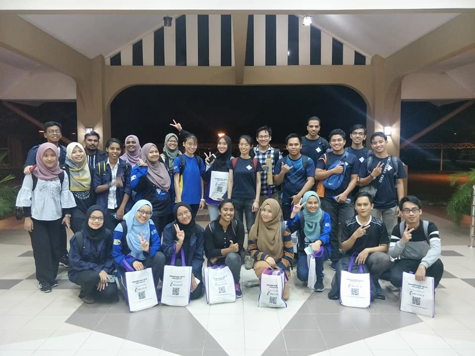
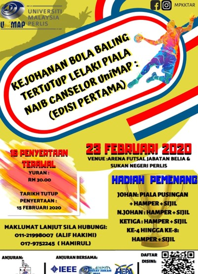
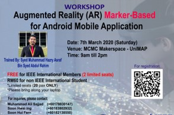
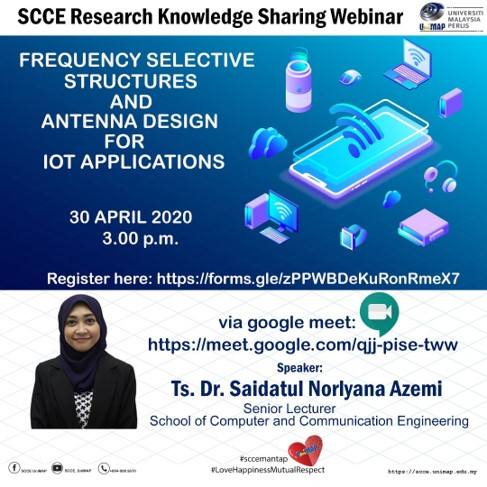

Universiti Malaysia Perlis (UniMAP) is Malaysia's 17th public institution of higher learning. Approved by
the Malaysian Cabinet in May 2001,
it started off as a university college - Kolej Universiti Kejuruteraan Utara Malaysia (KUKUM).
The institution’s first intake comprised 116 engineering students who began classes in June 2002.
In February 2007, KUKUM was upgraded to a full-fledged university and renamed Universiti Malaysia Perlis
(UniMAP).
The university is one of only four technical universities in Malaysia.
UniMAP’s raison d’etre was to produce highly-skilled engineers to fulfil and support Malaysia’s Industrial
Blueprint (Pelan Induk Perindustrian Negara).
Over the years, we have remained true to this mission, aiming to produce exemplary
individuals who will contribute to the Nation’s development and industry competitiveness agenda.
Mission
To produce exemplary individuals who contribute to the nation’s development and industrial
competitiveness agenda.
Vision
An internationally competitive technical university.
Objetives
- -To develop holistic future leaders through well-rounded education based on practical
application of knowledge and skills.
- -To play a role in tertiary TVET to support the nation’s industrial growth.
- -To be the catalyst for the sharing of knowledge and technology with society.
- -To provide supportive environment that empowers intellectual and professional growth.
- -To generate new knowledge through strategic research endeavours for the benefit of humanity.
- -To create an intellectual environment conducive to the sharing of knowledge, views, culture and
ideas in pursuit of sustainability.
- -To contribute to the nation’s socioeconomic development and enrich the Malaysian culture.
IEEE UniMAP SB was established in the year 2015. Be part of us to experience IEEE Student Member
benefits:
• Maximize your professional networking opportunities.
• Access to IEEE MemberNet; an online search and networking tool to connect with technical and engineering
experts worldwide.
• Access to the IEEE Xplore online digital library.
• Free access to GoogleApps@IEEE, IEEE ResumeLab and reduced pricing in items from companies such as
Microsoft, Dell, and National Instruments.
• Get your own @ieee.org e-mail alias.
• Participation in humanitarian technology activities.
• Access individual society memberships, technical chapters and subscriptions.
• Connect with local IEEE Sections and volunteer leadership.
• Find upcoming conferences and take advantage of your membership by obtaining discounts on IEEE conferences
participation fees.
• IEEE offers many student awards, competitions and other opportunities to get actively involved.
• Read the latest news from IEEE, IEEE Spectrum, IEEE Standards News, and The Institute.

2015 First Batch

Student Activities

Committee Members

2019/2020 Committee

Awards
From 2015 till the current day, IEEE UniMAP Student Branch has conducted various activities which involve
students from UniMAP and other
universities.
Moreover, our University has collaborated with different Universities to conduct workshops for Postgraduate
and Undergraduate students.

2016 IEEE UniMAP Color Run
IEEE UniMAP SB Color Run was held at Kampus Tetap UniMAP Pauh Putra on the 19th of November 2016

C Programming Workshop
IEEE UniMAP SB organized C programming workshop for beginners at UniMAP MakerSpace on the 19th of
November 2020

USM SB Makerthon 2019
IEEE UniMAP SB collaborated with IEEE USM SB for Makerthon 2019 on the 12th & 13th October 2019

UniMAP Vice Chancellor's Cup Men's Indoor Handball Tournament
UniMAP Vice Chancellor's Cup Men's Indoor Handball Tournament was organized by IEEE UniMAP SB on 23rd
February 2020

AR Maker-Based for Android Mobile Application Workshop
Another successful event held by IEEE UniMAP Student Branch!
A great appreciation to Syed Muhammad Hazry Asraf Bin Syed Abdul Rahim passing his knowledge
on AR to the participants selflessly and thanks to everyone who actively participate yourself in
today's workshop!!

SCCE Research Knowledge Sharing Webminar Series 1
A knowledge sharing session conducted by Ts.Dr Saidatul Norlyana Azemi on the topic Frequency
Selective Structures & Design For IOT Applications